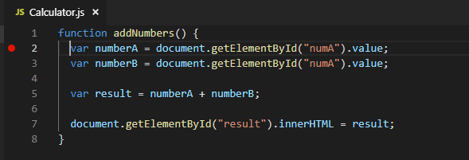
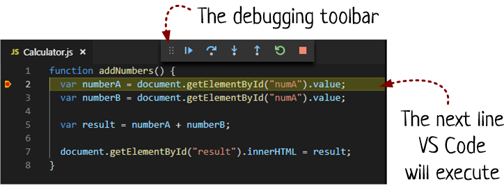
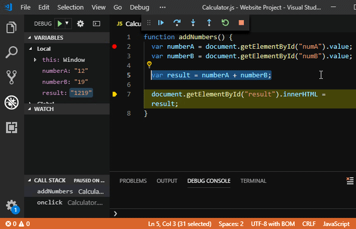

Debugging in VS code
An introduction
Created by Mobinius
Agenda
- Introduction to debugging
- Introduction to VS code tools
- Introduction to debugging tools in VS code
- Online editors
- Q 'n A
Introduction to Debugging
Minor mistakes that cause big problems: this is the story of programming since the dawn of computers
Debugging is many things, but I often think of it as the art of testing assumptions. Usually, a problem starts like this. You write a piece of clever code, run it, and find out that it’s doing something utterly different than what you expected. There’s a disconnect — you know what you told the code to do, but that doesn’t seem to be what it’s actually doing.
In other words, you’ve got assumptions about what’s happening — what code statements are running, what path your code is taking through conditions and loops, and what data your variables are holding. Here’s the thing: at least one of these assumptions is wrong. And the best way to track down the spot where your expectations diverge from the reality of your code is with debugging tools.
Why use editor for de-bugging ?!
Consistency
Introduction to VS code
Introduction to de-bugging in VS code
function addNumbers() {
// Get the numbers out of the text boxes.
var numberA = document.getElementById("numA").value;
var numberB = document.getElementById("numA").value;
// Perform the calculation.
var result = numberA + numberB;
// Show the result on the page.
document.getElementById("result").innerHTML = result;
}


Debug actions

- Continue / Pause F5
- Step Over F10
- Step Into F11
- Step Out ⇧F11
- Restart ⇧⌘F5
- Stop ⇧F5
Break points
Single step execution
breakpoint skip and usage
Log points

Spy on variables
Hover over the variable name
Advanced breakpoints
Hit count

Automatically open a URI when debugging a server program